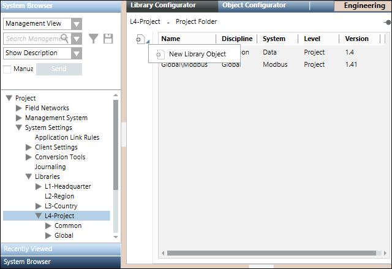
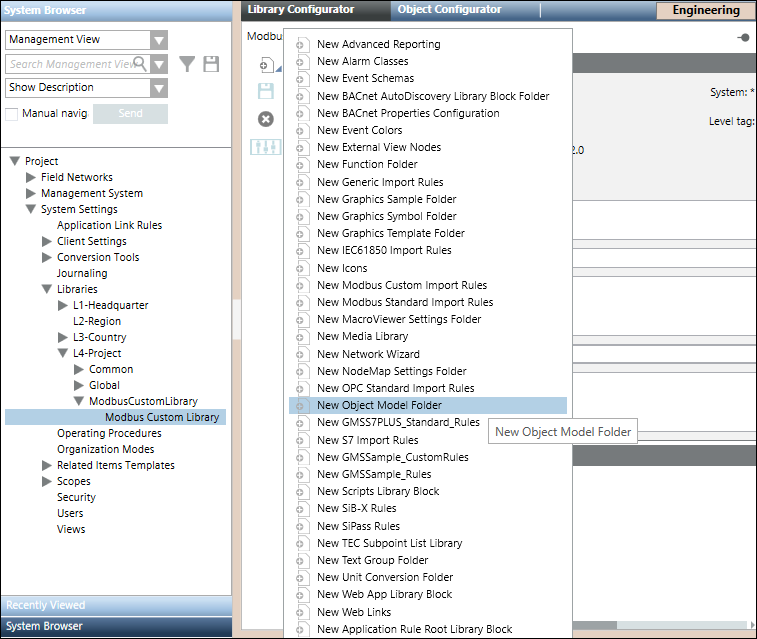
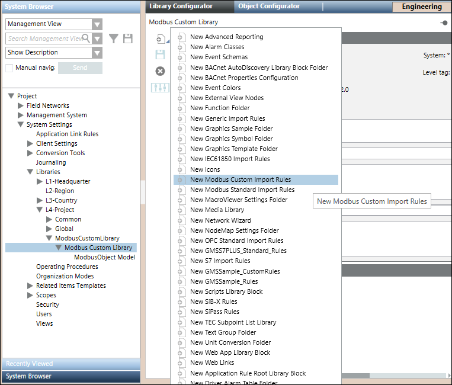
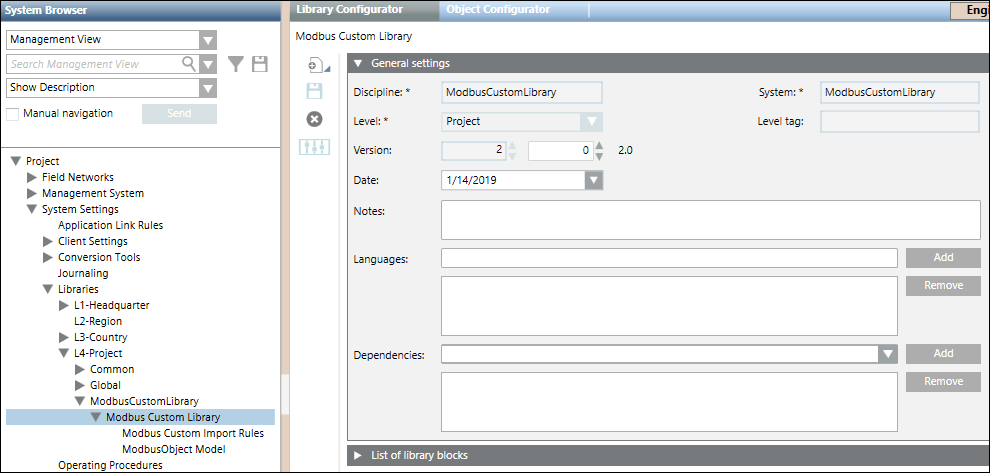

Create a Custom Project Library
- Create a custom library by navigating to Project > System Settings > Libraries according to your customization levels.

- Navigate to the library that you created and click the Library Configurator tab.
- Create an object model folder in it by selecting New Object Model Folder menu option in the list that displays on clicking Add new object
 . Also, create an import rules folder by selecting the New Modbus Custom Import Rules menu option. For information, see Adding Blocks to a Library.
. Also, create an import rules folder by selecting the New Modbus Custom Import Rules menu option. For information, see Adding Blocks to a Library.


- The library folder is created along with the Import Rules and Object Model folders.
